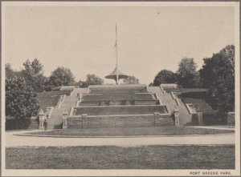

Fort Greene, Brooklyn
This is one of the many historic and vibrant neighborhoods in Brooklyn. It is known mainly for Fort Green Park, a major park in Brooklyn and the neighborhood carries the same name. It is also known for some of its historic landmark sites, museums, restaurants and other r attractions. It is important to note that a neighboring community called Clinton Hill is sometimes also referred to as Fort Greene and Forte Greene is also sometimes referenced as being Clinton Hill are sometimes confused as being the same areas
Historically, Fort Greene was the area that had a fort originally called Putnam Fort and it was renamed by Nathaniel Greene who is considered a hero of the American Revolutionary War. It was initially bought by the city of Brooklyn and called Washington Square Park then it was renamed Fort Green Park in 1896.
Fort Greene Park contains the famous Prison Ship Martyrs Monument. It consists of a 100-foot-wide granite staircase and a central Doric column. The monument marks the site of a crypt for more than 11,500 men and women, known as the prison ship martyrs, who were buried in a tomb near the Brooklyn Navy Yard.
Notable individuals who resided in Fort Greene include the singer and song writer Erykah Badu; the famous author of Native Son, Richard Wright, and the actress, Christina Ricci. The recently elected Attorney General of New York State also hails from Fort Greene. The famous Al Capone was born in Fort Greene. Fort Greene is also home to the Brooklyn Academy of Music, the Brooklyn Music School, The Paul Robeson Theater, and The Museum of Contemporary African Diasporan Arts.
